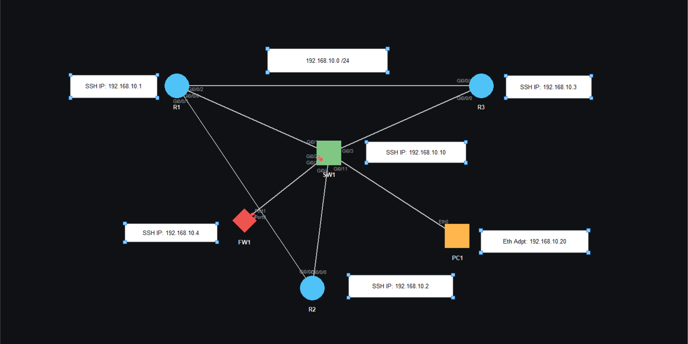
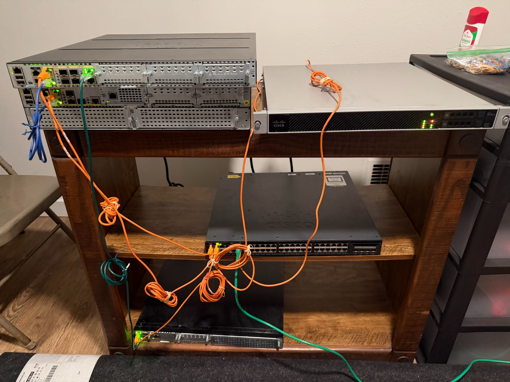

Objective
Establish reliable and secure management-plane access.
This physical lab documents device recovery, management addressing, SSH configuration, and validation across a dedicated lab subnet. It also preserves a troubleshooting case where a duplicate IP address caused SSH attempts to reach the Windows PC instead of the intended router.


Key troubleshooting finding
A router interface and the Windows PC temporarily shared the same IP address. SSH attempts appeared to fail because traffic was targeting the PC itself rather than the router. TTL behavior and ARP inspection exposed the conflict. Assigning unique addresses restored correct reachability.
Operational interpretation
- Management addressing must be planned before remote access is enabled.
- Cisco SSH bring-up requires hostname and domain context, credentials, RSA keys, SSH version settings, and VTY authentication.
- ARP and TTL evidence can quickly separate host-local behavior from network-device reachability.
- Platform-specific recovery steps must be verified against the actual chassis and software family.